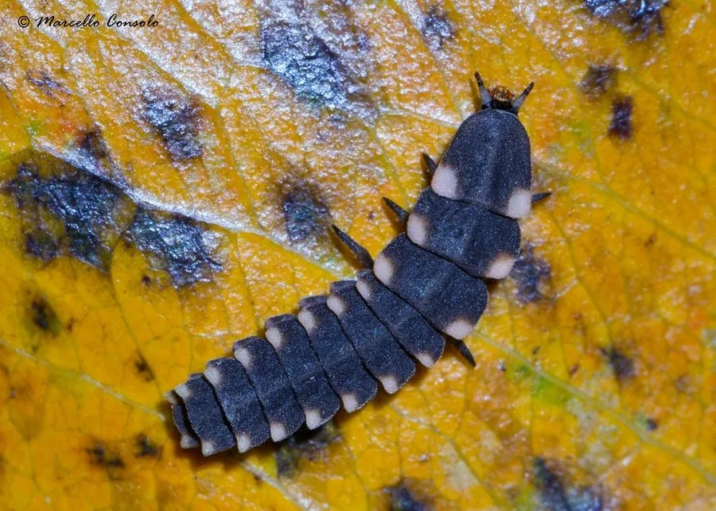

昆虫 · 动物界
夜光萤 Lampyris noctiluca

雌虫无翅、能发出绿色冷光的欧洲常见萤火虫，成虫发光主要用于求偶，幼虫以蜗牛为食，是夏夜发光昆虫的代表。
- 分类
- 门节肢动物门纲昆虫纲目鞘翅目科萤科属夜光萤属
- 栖息环境
- 湿润的草地、林缘、灌木丛与旧花园，幼虫多在落叶层活动
- 地理分布
- 欧洲大部分地区，包括英国、法国、德国与北欧
- 保护级别
- 暂无评估；欧洲多国因种群下降列入保护关注名单
物种志
夜光萤雄虫体长约 1–1.5 cm，有完整的鞘翅，体褐色；雌虫体长约 1.5–2 cm，没有翅膀、身体扁平，外形很像幼虫，腹部末端 2–3 节能发出明亮的黄绿色光。雌虫整夜伏在草茎上发光，等待飞行的雄虫前来交配。
幼虫俗称萤火虫幼虫，捕食蜗牛和蛞蝓，用带钩的上颚攻击，注入消化液后再吸食。幼虫期长达 1–2 年，成虫寿命只有约 1–2 周，多数不取食。发光由荧光素在荧光素酶催化下氧化产生，几乎不产热，属于冷光。夜光萤分布于欧洲大部分地区，常见于湿润的草地、林缘和旧花园；光污染、杀虫剂和草地减少正使它的种群明显下降，多国已将其列入保护关注名单。
形态与习性
- 食性幼虫捕食蜗牛和蛞蝓，成虫多不取食
- 体长雄虫约 1–1.5 cm，雌虫约 1.5–2 cm
- 寿命幼虫期 1–2 年，成虫仅约 1–2 周
- 发光腹部末端的冷光由荧光素氧化产生，用于求偶
- 雌虫无翅不能飞行，靠发光吸引雄虫
- 威胁光污染、杀虫剂和草地减少导致数量下降
趣味知识
- 萤火虫的光几乎不产生热量，被称为冷光，发光效率极高。
- 雌性夜光萤没有翅膀，整夜伏在草茎上发光等待雄虫。
- 路灯和光污染会干扰萤火虫的求偶信号，使繁殖成功率下降。